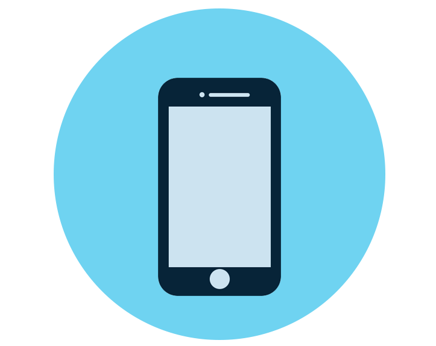

How do I get work experience? How should I contact a work experience provider? How can I increase
my chances of getting work experience?

Introduction
A degree in medicine is one of the most competitive
degrees in the UK. Therefore, just being
good at school and achieving high grades is usually not enough for a
successful application.
Other extra- and super-curricular activities need to be undertaken to
enhance your
portfolio.
Work experience is one of the most important aspects of
your application. It shows that you
have been exposed to healthcare settings and you have an idea of what being
a doctor
involves. In addition, work experience is also a great opportunity to
reflect and learn
about something specific to medicine in case you are asked about that in
your interview.
The vast majority of universities will require you to have done some work
experience. Some
may have minimum requirements, others may not. Either way, the single most
important thing
when it comes to work experience is what you have learned from it, rather
than how much you
have done.
Therefore, don’t be disheartened if you couldn’t get the amount of weeks
that you wanted.
Getting work experience in the UK is generally very difficult. With the
outbreak of the
Coronavirus, this is even more difficult now. As long as you meet your
universities’
requirements, and if you have taken away something meaningful from your work experience, you
should be in the safe zone.

How Do I Arrange Work Experience?
There are many ways through which you can arrange work experience.
The most common way is by
contacting the place you’re interested in via phone or email.
In addition, there are the random opportunities that arise every now and
then for you and
others to make good use of. For example, if your sixth form/college hosted
a talk by a
doctor/healthcare worker, you can always go up to them after the talk and
directly ask them.
This post will mainly focus on the steps you should take to obtain the contact
details for
the workplace you want to apply for, covering the advantages and
disadvantages of using the
phone or the email.
For more details on each method, check out our work
experience blog
posts.

How Do I Get In Touch With The Organisation?
Simply, visit the website of the place that you’re thinking of applying to.
Look for any
contact details and write them down.
Now comes the question as to whether you should use the phone or
email. If you have a clear
preference for one over the other, by all means go for that preference. Moreover, if you’re
unsure about which one then we suggest you follow the guidance below.
🏥 If you are applying to a small institution, such as a small GP
surgery or a
care home, it is
recommended to use the phone. This is because smaller institutions are more
likely to pick
up the phone than larger and busier ones. Smaller institutions may also not be very active
on the email front.
🏥 For the reason mentioned in the previous paragraph, if you are applying to a
large
institution such as a hospital then using the
email is more likely to work than using the
phone. Plus some large hospitals may have a specific team whose
responsibility is handling
work experience for aspiring medics and medical students.

One Step To Increase Your Chance Of Success, Dramatically!
Pick a specific hospital you wish to apply to. Visit its
website. Look through the list of
their specialities. Find a speciality that you are interested in at the
moment. Look at the
list of consultants of that speciality. Choose any consultant. Read
their profile.
Usually, in the consultants’ profiles you will find some information about their
research
interests. If a research interest of a specific consultant sounds interesting
to you, that’s
great! Look it up for more details. Learn more about it and potentially
read that
consultant’s research publications if they’re available.
Check out
Pubmed to see if a particular research paper and publications are
available for
free.
⚡⚡ For example, let’s assume that a cardiologist’s area of research
interests is on the
effect
of beta-blockers on blood pressure in diabetic people. Look up what
beta-blockers are, what
do they do? A little bit about their history. Any side effects? Etc. Then
find out about
their effect on blood pressure and what other things affect blood pressure. Then, do some
research on the heart, its basic structure and the effect of beta-blockers
on the heart.
Then research more about diabetes and the effect that has on blood pressure as well.
⚡⚡ After you do your research, contact that consultant via email or phone.
In this particular
case because consultants are usually busy, we recommend using the email so
that they can
read your email whenever they want to. If you contact a consultant by phone and they have
ward rounds and meetings to go through, they’re a lot more likely to turn you
down.
In your email say that you are interested in their area of research. Talk about the
research
that you have done about that area. Then say that you would like to shadow them for
a few
days to
learn more about their speciality and their lives within that
speciality, and to
learn more about their research.
That way, the doctor is a
lot more likely to accept your request to shadow
him/her as they
see that you are
genuinely interested in their field and that you have done
some background
research to prove it.

A Few Things To Keep In Mind...
Just a few things you need to be aware of before applying for work experience.
✅ If you are interested in shadowing a GP, it has to be a different
GP to the one that you’re
registered to.
✅ Healthcare institutions are very busy workplaces and they are likely to
have very tight
schedules. Your calendar needs to be very flexible when it comes to looking
for placements.
Unless, you have an important exam or if you have already booked a family holiday, you
should probably prioritise work experience over anything else.
✅ There are certain vaccinations and health precautions that you will need
to
have before you
apply for your work experience. If you are unsure about this aspect of applying for work
experience, visit the Occupational Health department’s website of the
institution you are
applying for to obtain more information.
In conclusion, this was a
brief overview of applying for work experience. Have
a look at our
phone and
email
templates for when you decide to contact the place you’re interested in.
Visit our blog
page for more help and advice about your
medical
application.